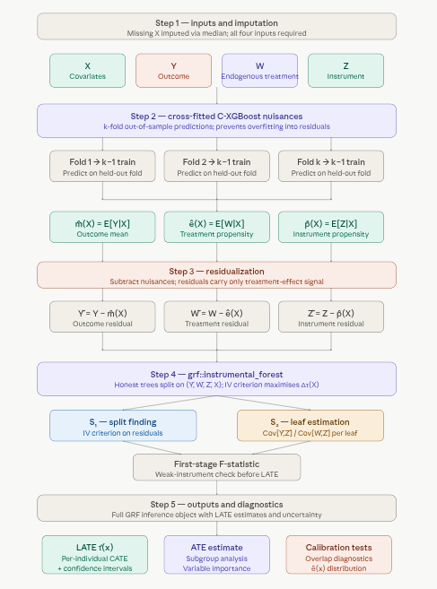
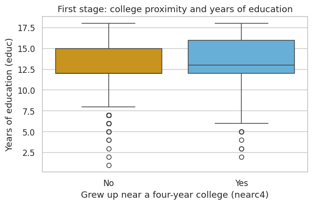
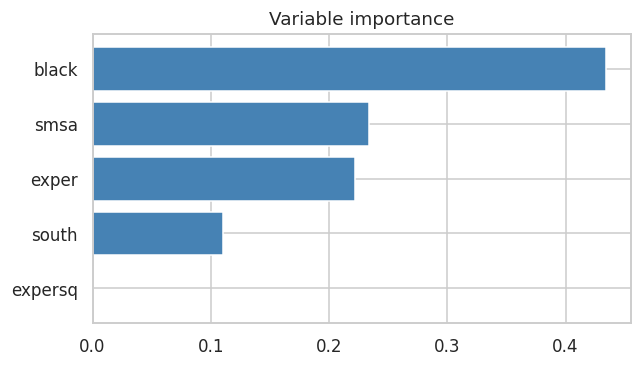

1.7 Instrumental Causal XGBoost (Boosted IV Forest)
Overview
A Boosted IV Forest estimates heterogeneous treatment effects in settings where treatment assignment is endogenous — that is, correlated with unobserved factors that also affect the outcome. Like a standard Instrumental Forest, it exploits an instrumental variable\(Z\) that shifts treatment \(W\) without directly affecting the outcome \(Y\). The “boosted” part is the first stage. Cross-fitted XGBoost models estimate the outcome mean, the treatment mean, and the instrument mean, which lets the nuisance functions pick up nonlinearities and interactions. The second stage fits two more boosters to the residual products and returns their ratio as the conditional LATE.
The result is a two-stage estimator: XGBoost estimates the nuisances on tabular covariates, and a residual Wald ratio turns those residuals into a conditional LATE.
The Conditional LATE
The quantity of interest is the Conditional Local Average Treatment Effect (LATE) — the treatment effect for compliers (units whose treatment status changes because of \(Z\)), allowed to vary with covariates:
\[\tau(X) = \frac{\text{Cov}[Y - \hat{m}(X),\; Z - \hat{p}(X) \mid X]}{\text{Cov}[W - \hat{e}(X),\; Z - \hat{p}(X) \mid X]}\]
where the three nuisance functions are:
\(\hat{m}(X) = E[Y \mid X]\) — the conditional mean outcome, estimated to partial out baseline variation in \(Y\);
\(\hat{e}(X) = E[W \mid X]\) — the treatment propensity, estimated to partial out selection into treatment;
\(\hat{p}(X) = E[Z \mid X]\) — the instrument propensity, estimated to partial out any covariate-driven variation in \(Z\).
After residualizing, the numerator \(\text{Cov}[\tilde{Y}, \tilde{Z} \mid X]\) captures how much the instrument moves the outcome; the denominator \(\text{Cov}[\tilde{W}, \tilde{Z} \mid X]\) captures how much the instrument moves the treatment. Their ratio isolates the local causal effect of \(W\) on \(Y\) — purged of confounding — for the complier subpopulation with covariates \(X = x\).
Why “Boosted”?
A standard instrumental forest estimates \(\hat{m}\), \(\hat{e}\), and \(\hat{p}\) using regression forests (or skips nuisance estimation entirely if the instrument is assumed randomized). This works well when nuisance functions are smooth and additive, but can underfit when outcomes and treatments depend on complex interactions between covariates.
Replacing the first stage with cross-fitted C-XGBoost addresses this directly:
XGBoost captures irregular boundaries, high-order interactions, and nonlinear feature effects that regression forests can miss.
Cross-fitting (k-fold out-of-sample prediction) prevents the nuisance estimates from overfitting to the training data, which would otherwise inflate the apparent signal in the residuals and bias the second-stage LATE estimates.
The second stage is a residual Wald ratio on \((\tilde{Y}, \tilde{W}, \tilde{Z}, X)\): one booster fits the outcome–instrument product and another fits the treatment–instrument product. The conditional LATE is their ratio.
The theoretical justification is the Neyman orthogonality of the IV moment condition: the LATE estimator is locally insensitive to small errors in nuisance estimation, meaning flexible first-stage models improve finite-sample performance without introducing asymptotic bias, as long as nuisances converge at a reasonable rate.
Validity Conditions
The Boosted IV Forest inherits the standard IV assumptions:
Relevance — \(Z\) must be a strong predictor of \(W\) conditional on \(X\). Weak instruments inflate the variance of \(\tau(X)\) and can cause severe bias. A first-stage regression below reports the instrument coefficient and its F-statistic.
Exclusion restriction — \(Z\) affects \(Y\) only through \(W\), with no direct path. This is not testable from data and must be justified by domain knowledge.
Independence — \(Z\) is as good as randomly assigned conditional on \(X\) (no unmeasured confounders of the \(Z \to Y\) path).
Pipeline: Five Steps

Boosted IV Forest pipeline
A few things worth highlighting from the pipeline:
Step 2 (cross-fitting) is the critical upgrade over a standard instrumental forest. Fitting nuisance models on the full training set and then predicting on the same data induces overfitting into the residuals — the residuals appear smaller than they should be, which inflates the apparent signal in the IV covariance. K-fold cross-fitting breaks this feedback loop by ensuring every nuisance prediction is made out-of-sample. The theoretical grounding is Neyman orthogonality: the IV moment condition is locally insensitive to small errors in \(\hat{m}\), \(\hat{e}\), and \(\hat{p}\), so cross-fitted nuisances at a moderate convergence rate are sufficient for root-\(n\) inference on \(\tau(X)\).
Step 3 is where the nuisance models meet the causal target. The residuals \((\tilde{Y}, \tilde{W}, \tilde{Z})\) remove variation in \(Y\), \(W\), and \(Z\) that can be explained by \(X\). The boosted second stage then estimates where \(\text{Cov}[\tilde{Y}, \tilde{Z}] / \text{Cov}[\tilde{W}, \tilde{Z}]\) differs across covariate profiles.
The first-stage F-statistic in step 4 is not optional. A weak instrument (\(F < 10\) is a common rule of thumb) means \(Z\) explains little variation in \(W\) after partialling out \(X\), which causes the denominator \(\text{Cov}[\tilde{W}, \tilde{Z} \mid X]\) to be near zero. The resulting LATE estimates become extremely noisy and potentially severely biased — the XGBoost first stage cannot rescue a fundamentally weak instrument.
Key Features
Endogeneity correction: Instrument \(Z\) isolates exogenous variation in \(W\).
Heterogeneous effects: LATE \(\tau(X)\) varies with covariates.
Flexible first stage: XGBoost nuisances can capture nonlinearities; cross-fitting avoids overfitting.
Instrument diagnostics: a first-stage regression and its F-statistic.
Subgroup summaries, variable importance, and SHAP explanations of the fitted LATE.
Boosted IV Forest with Python
This tutorial uses the Card (1995) dataset to estimate returns to education (effect of education on log wages) using proximity to a 4-year college as an instrument, implemented with the BoostedIVForest class from PyCausalML.
Setup
This notebook fits BoostedIVForest from PyCausalML (pycausalml.tree_based_models).
fit(X, treatment, y, instrument) returns the fitted estimator. predict returns a NumPy array of conditional average treatment effects. A fitted model also exposes explain and plot_shap.
Install the package from this repository, with the plotting and boosting extras.
The example is the Card (1995) extract used in the instrumental forest tutorial: log wage, years of education, and proximity to a four-year college. learner='xgb' uses XGBoost for the residual Wald estimator.
Code
import subprocessimport sysfrom pathlib import Pathdef _repo_root() -> Path: here = Path.cwd().resolve()for cand in [here, *here.parents]:if (cand /"pyproject.toml").is_file() and (cand /"src"/"pycausalml").is_dir():return candraiseFileNotFoundError("PyCausalML repository was not found. Run this notebook from the repository." )root = _repo_root()subprocess.check_call([ sys.executable, "-m", "pip", "install", "-q", "-e", f"{root}[plot,boost,shap]", "statsmodels",])print("PyCausalML ready.")
PyCausalML ready.
Code
%matplotlib inlineimport matplotlib.pyplot as pltimport numpy as npimport pandas as pdimport seaborn as snsimport statsmodels.formula.api as smffrom statsmodels.stats.anova import anova_lmfrom pycausalml import BoostedIVForestsns.set_theme(style="whitegrid")plt.rcParams["figure.dpi"] =110print("Imported PyCausalML")
Imported PyCausalML
Data: Returns to Education (Card Dataset)
We estimate the causal effect of education on wages using proximity to a four-year college as an instrument (Card, 1995).
lwage = log(wage) — outcome (Y)
educ = years of education — endogenous treatment (W)
nearc4 = grew up near a four-year college — instrument (Z)
fig, ax = plt.subplots(figsize=(6, 4))sns.boxplot( data=card, x="nearc4", y="educ", hue="nearc4", palette=["#E69F00", "#56B4E9"], legend=False, ax=ax,)ax.set_title("First stage: college proximity and years of education")ax.set_xlabel("Grew up near a four-year college (nearc4)")ax.set_ylabel("Years of education (educ)")ax.set_xticks([0, 1], ["No", "Yes"])fig.tight_layout()plt.show()

Training a Boosted IV Forest
BoostedIVForest cross-fits XGBoost nuisances for log wage, years of education, and college proximity, then forms the conditional return to schooling from the residual Wald ratio. Education is continuous, as in the usual Card specification.
Code
model = BoostedIVForest(n_estimators=60, n_splits=2, learner="xgb", random_state=1)model.fit(X, W, Y, Z, feature_names=feature_names)tau_hat = model.predict(X)print("BoostedIVForest")print(f" n = {len(tau_hat)}, p = {X.shape[1]}")print(f" mean CATE = {tau_hat.mean():.3f}")print(f" CATE sd = {tau_hat.std():.3f}")
BoostedIVForest
n = 3010, p = 5
mean CATE = 0.090
CATE sd = 0.215
Model Summary
Code
print(f"Mean estimated LATE: {tau_hat.mean():.3f}")print(f"LATE sd: {tau_hat.std():.3f}")print(f"LATE range: {tau_hat.min():.3f} to {tau_hat.max():.3f}")
Mean estimated LATE: 0.090
LATE sd: 0.215
LATE range: -1.101 to 2.164
Predicting Treatment Effects
Code
ate_hat =float(tau_hat.mean())se_hat =float(tau_hat.std(ddof=1) / np.sqrt(len(tau_hat)))print(f"Average estimated return to education: {ate_hat:.3f} (SE of the mean {se_hat:.3f})")
Average estimated return to education: 0.090 (SE of the mean 0.004)
Visualizing Results
Code
fig, ax = plt.subplots(figsize=(7, 5))ax.scatter(card["exper"], tau_hat, s=12, alpha=0.3, c="black", label="Individual LATE")ax.axhline(ate_hat, color="crimson", lw=2, ls="--", label="Average LATE")ax.set_xlabel("Potential experience (exper)")ax.set_ylabel("Estimated return to education")ax.set_title("Heterogeneous returns to schooling by experience")ax.legend(loc="upper right")fig.tight_layout()plt.show()
new_data = pd.DataFrame({"exper": [10],"expersq": [10**2],"black": [0],"smsa": [1],"south": [0],})new_pred = model.predict(new_data[feature_names].to_numpy())print("Predicted return to education for this profile:",round(float(np.squeeze(new_pred)), 3),)
Predicted return to education for this profile: 0.01
Subgroup Analysis
Code
rows = []for name in feature_names: col = card[name].to_numpy(dtype=float) levels = np.unique(col)iflen(levels) ==2: groups = [(f"{name} = {level:g}", col == level) for level in levels]else: cut =float(np.median(col)) groups = [(f"{name} <= {cut:g}", col <= cut), (f"{name} > {cut:g}", col > cut)]for label, mask in groups: rows.append({"group": label,"n": int(mask.sum()),"mean_late": float(tau_hat[mask].mean()), })print(pd.DataFrame(rows).round(3).to_string(index=False))
group n mean_late
exper <= 8 1578 0.048
exper > 8 1432 0.136
expersq <= 64 1578 0.048
expersq > 64 1432 0.136
black = 0 2307 0.098
black = 1 703 0.062
smsa = 0 864 0.120
smsa = 1 2146 0.078
south = 0 1795 0.080
south = 1 1215 0.104
feature importance
1 expersq 0.000
4 south 0.110
0 exper 0.222
3 smsa 0.234
2 black 0.434

Estimated LATE and experience
Both potential outcomes are not observed, so this is a description of the fitted surface: a linear regression of the estimated return to education on potential experience.
Note: - Check first-stage F-statistic > 10 (strong instrument). - Verify instrument validity (relevance and exclusion restriction) in your application. - Increase n_splits and n_estimators for a more stable fit.
Summary and Conclusion
Boosted IV Forest estimates a heterogeneous local average treatment effect when treatment is endogenous. Cross-fitted XGBoost models residualize the outcome, treatment, and instrument, and a second pair of boosters forms the conditional LATE as a residual Wald ratio. This tutorial used the Card (1995) dataset, with years of education as the treatment and proximity to a four-year college as the instrument, and walked through BoostedIVForest: the first stage, fitted LATEs, a new-profile prediction, subgroup summaries, variable importance, and SHAP explanations. The same workflow applies to other settings with a valid instrument and covariates.
Resources
Athey, Susan, Julie Tibshirani, and Stefan Wager. “Generalized Random Forests.” Annals of Statistics, 47(2), 2019.
Card, David (1995). “Using Geographic Variation in College Proximity to Estimate the Return to Schooling.” In Aspects of Labour Market Behaviour: Essays in Honour of John Vanderkamp.
Wang, Guihua, et al. “An Instrumental Variable Forest Approach for Detecting Heterogeneous Treatment Effects in Observational Studies.” Management Science, 2021.